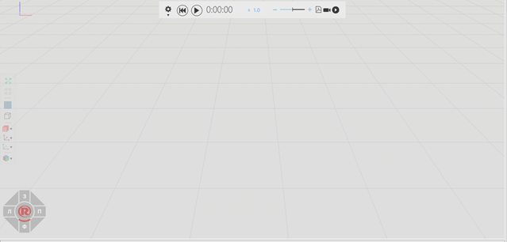
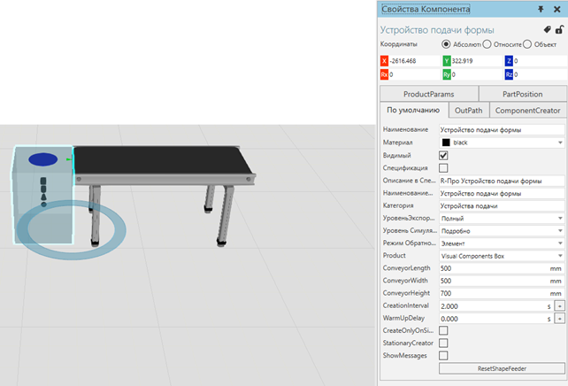
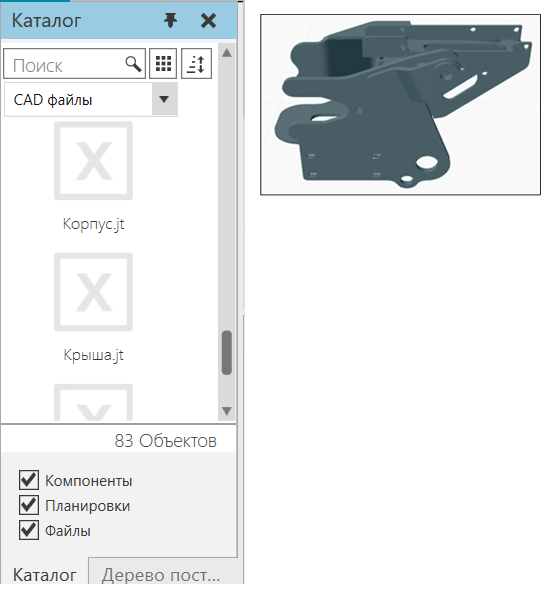
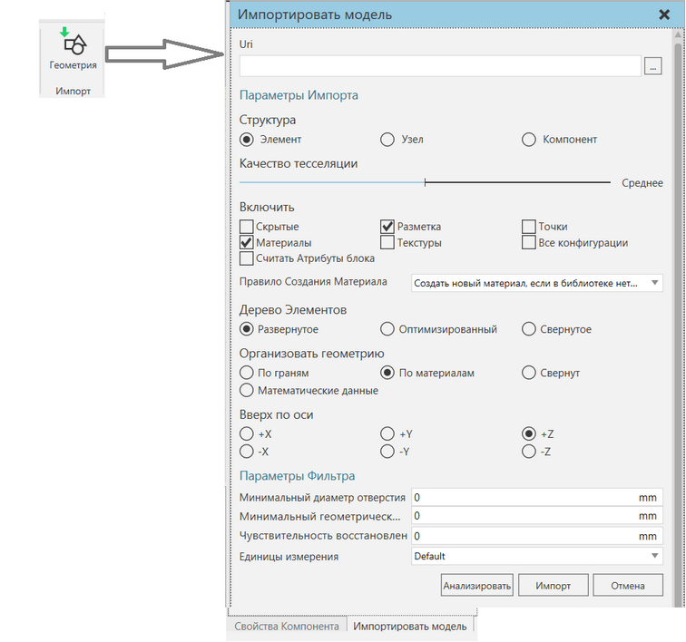
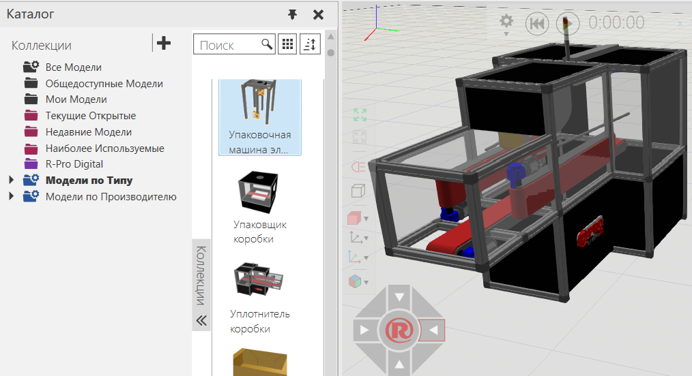
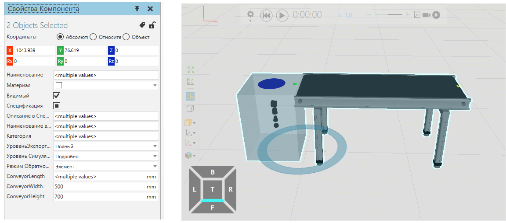
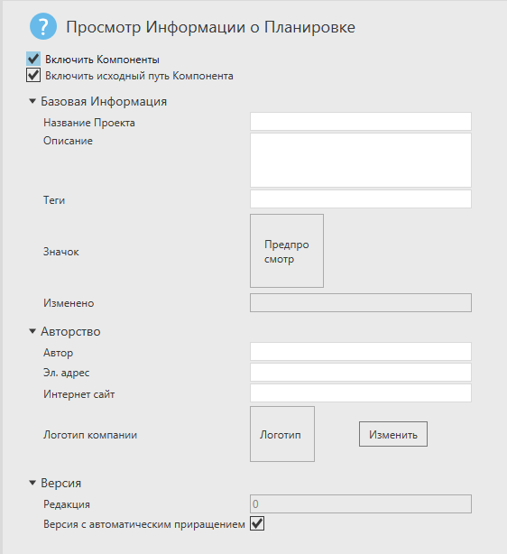
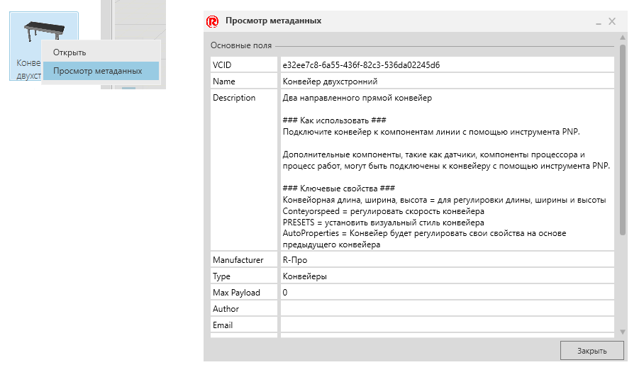

Создание Планировки |
|
При запуске ПО Рациональное Производство в трехмерном мире автоматически открывается новая пустая планировка.  Пустая планировка с полом и сеткой
В планировку можно добавлять и в ней редактировать компоненты для формирования необходимой конфигурации.

Вы также можете импортировать CAD-файлы как новые компоненты планировки. Одним из вариантов является перетаскивание CAD-файлов в рабочую область для быстрого импортирта их в качестве компонентов. 
Другой вариант — использовать инструмент "Импорт" для анализа CAD-файлов и настройки их импорта в качестве компонентов. 
Как правило, компоненты добавляются из панели электронного каталога на планировку 3D-мира.  Отображаемый элемент в коллекции, связанный с источниками, перетаскиваем в трехмерный мир
Когда компонент выбран, вы можете управлять им, а также редактировать его свойства. Когда выбраны два или более компонентов, вы можете управлять всеми выбранными компонентами, а также редактировать любые соответствующие свойства, которые могут иметь одинаковое значение. Например, компоненты не могут иметь одинаковые имена, но могут использовать одинаковый режим "УровеньЭкспорта в PDF". 
При сохранении планировки есть возможность включить компоненты в файл планировки. Зачем? Компоненты и планировка являются архивными файлами. Добавление компонентов увеличивает размер файла планировки, но позволяет делиться компонентами с пользователями, которые могут не иметь доступ к компонентам этой конкретной планировки. 
По умолчанию планировка ссылается на компонент по его VCID, уникальному ключу для идентификации и загрузки компонента в трехмерный мир. VCID компонентов вместе с другими элементами сохраняются в файл планировки. Файл планировки включает в себя все компоненты 3D мира, а также конфигурацию компонентов (местоположение, значения свойств, соединения).  |